17.16. ဇလဗေဒဆိုင်ရာ ဆန်းစစ်လေ့လာခြင်း (Hydrological analysis)
Note
ဤသင်ခန်းစာတွင် hydrology ဆိုင်ရာ analysis အချို့ကို လုပ်ဆောင်ပါမည်။ ဤ analysis သည် အလွန်ကောင်းသောဥပမာတစ်ခုဖြစ်သောကြောင့် နောက်လာမည့်သင်ခန်းစာအချို့တွင် အသုံးပြုသွားမည်ဖြစ်ပြီး အဆင့်မြင့် feature အချို့ကို သရုပ်ပြသရန်အတွက် ၎င်းကို အသုံးပြုသွားပါမည်။
ရည်ရွယ်ချက်များ- DEM တစ်ခုမှ channel network (ရေစီးကြောင်းကွန်ယက်) တစ်ခုဆွဲထုတ်ခြင်း၊ watersheds (ရေဝေရေလဲ) ဧရိယာဖော်ထုတ်ခြင်းနှင့် စာရင်းအင်းအချို့တွက်ချက်ခြင်းများကို လုပ်ဆောင်မည်ဖြစ်ပါသည်။
ပထမဆုံးအနေဖြင့် DEM တစ်ခုသာပါဝင်သော ဤသင်ခန်းစာ၏ project ဖိုင်ကို ဖွင့်ပါ။
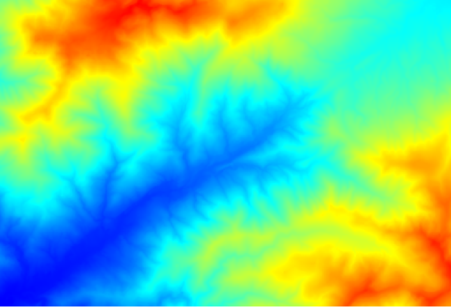 ပထမဆုံးလုပ်ဆောင်ရမည့် မော်ဂျူးသည် Catchment area (အချို့သော SAGA ဗားရှင်းများတွင် ၎င်းကို Flow accumulation (Top Down) ဟုခေါ်ဆိုပါသည်) ဖြစ်ပါသည်။ Catchment area အမည်ပါသော အခြားတစ်ခုခုကိုလည်း အသုံးပြုနိုင်ပါသည်။ ၎င်းတို့တွင် အတွင်းပိုင်း၌ မတူညီသော algorithm များပါရှိသော်လည်း အခြေခံအားဖြင့် ရလာဒ်များသည် အတူတူပင်ဖြစ်ပါသည်။
Elevation field ထဲတွင် DEM ကိုရွေးပါ၊ ကျန်သော parameter များကို default တန်ဖိုးများအတိုင်း ထားရှိပါ။
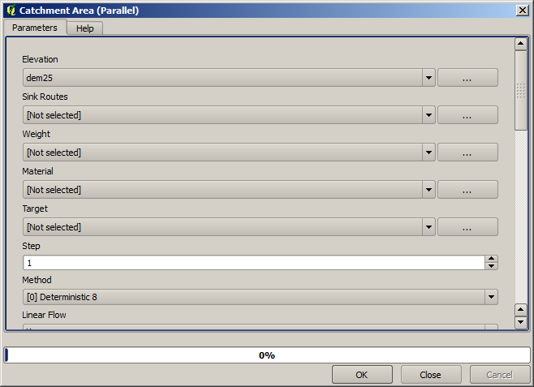 အချို့သော algorithm များသည် layer များစွာကို တွက်ချက်ပေးပါသည်၊ သို့သော် Catchment Area တွင် layer တစ်ခုတည်းသာအသုံးပြုပါသည်။
Layer ပုံဖော်ပြသခြင်းကိုကြည့်ပါက အချက်အလက်များစွာမသိရှိနိုင်ပါ။
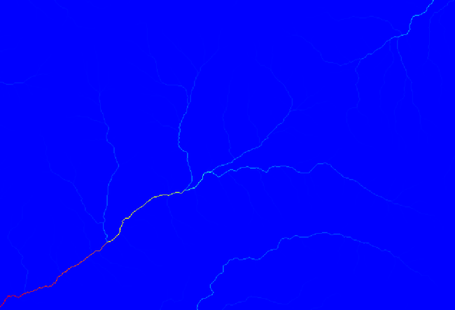 Histogram ကိုကြည့်ပါက တန်ဖိုးများသည် ညီမျှစွာ ပြန့်နှံ့မှုမရှိသည်ကို မြင်တွေ့ရပါလိမ့်မည် (channel network နှင့်သက်ဆိုင်သော cell အနည်းငယ်တွင် တန်ဖိုးအလွန်မြင့်နေပါသည်)။ Raster calculator algorithm ကိုအသုံးပြုပြီး catchment တန်ဖိုးဧရိယာ၏ လော်ဂရပ်သမ် (log) ကိုတွက်ချက်ပါက အချက်အလက်များပိုမိုပါရှိသော layer တစ်ခုကို ရရှိပါလိမ့်မည်။
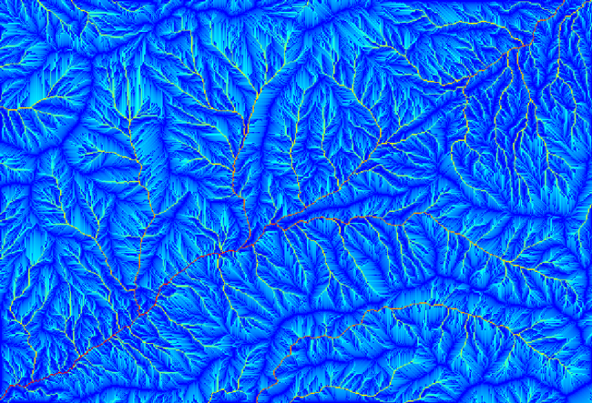 Channel initiation (ရေစီးကြောင်းအစပြုမှု) အတွက် threshold (သတ်မှတ်ချက်) တစ်ခုကိုသတ်မှတ်ပေးရန် catchment area (flow accumulation ဟုလည်းခေါ်ပါသည်) ကိုအသုံးပြုနိုင်ပါသည်။ Channel network algorithm ကိုအသုံးပြု၍ လုပ်ဆောင်နိုင်ပါသည်။
Initiation grid - catchment area layer ကိုအသုံးပြုပါသည်၊ log တွက်ချက်ထားသော layer ကိုအသုံးမပြုပါ။
Initiation threshold -
10.000.000Initiation type - Greater than
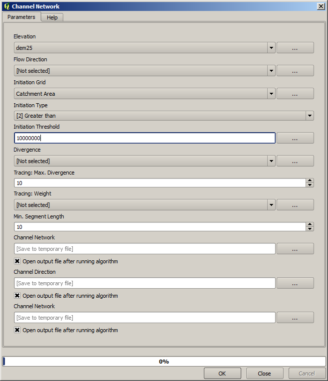 Initiation threshold တန်ဖိုးကို မြှင့်လိုက်ပါက ပိုမိုကျဲပါးသော channel network တစ်ခုကို ရရှိပါလိမ့်မည်။ တန်ဖိုးကို လျှော့ချပါက ပိုမိုစိတ်သော channel network တစ်ခုကိုရရှိပါလိမ့်မည်။ ပေးထားသောတန်ဖိုးကိုအသုံးပြုပါက အောက်ပါအတိုင်းရရှိပါမည်။
အထက်ဖော်ပြပါပုံတွင် ရလာဒ် channel network vector layer နှင့် DEM ကိုသာ ပြသထားပါသည်၊ သို့သော် ရလာဒ် channel network အတိုင်းပါရှိသည့် raster layer တစ်ခုလည်း ရှိသင့်ပါသည်။ ထို raster သည် ကျွန်ုပ်တို့အမှန်တကယ်အသုံးပြုမည့် raster layer ဖြစ်ပါလိမ့်မည်။
ရလာဒ် channel network နှင့်သက်ဆိုင်သော basin အခွဲများကို ဖော်ထုတ်ရန် channel network ထဲရှိ ဆုံမှတ်များအားလုံးကို outlet point များအနေဖြင့်အသုံးပြုပြီး Watersheds basins algorithm ဖြင့်လုပ်ဆောင်ပါမည်။ သက်ဆိုင်ရာ prameter များကို အောက်ပါအတိုင်း သတ်မှတ်ရပါမည်။
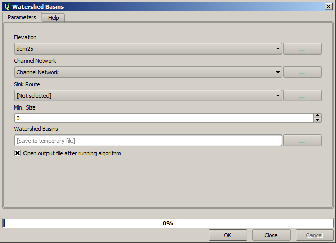 ရလာဒ်သည် အောက်ပါပုံအတိုင်းဖြစ်ပါသည်။
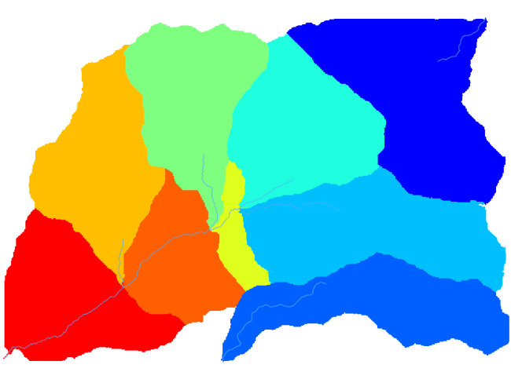 ထိုရလာဒ်သည် raster layer တစ်ခုဖြစ်ပါသည်။ ၎င်းကို Vectorising grid classes algorithm အသုံးပြု၍ vector အဖြစ်သို့ ပြောင်းလဲနိုင်ပါသည်။
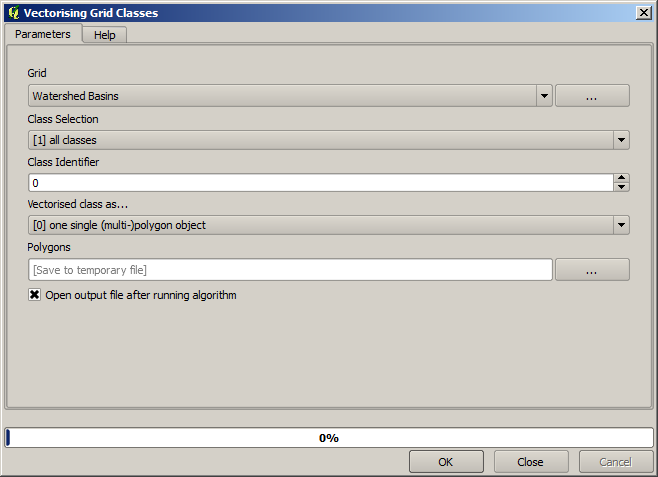 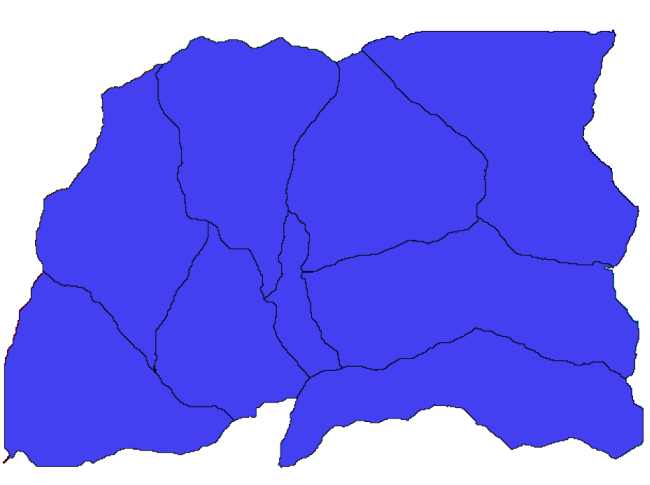
Basin အခွဲများတစ်ခုချင်းစီရှိ elevation တန်ဖိုးများနှင့်ပတ်သက်သော စာရင်းအင်းအချက်အလက်များကို တွက်ချက်ပါမည်။ Basin အခွဲအတွင်းရှိ elevation ကိုသာ ကိုယ်စားပြုသော layer တစ်ခုရယူပြီး ထို layer ကို စာရင်းအင်းအချက်အလက်များတွက်ချက်မည့် မော်ဂျူးဆီသို့ ပို့ဆောင်ပေးမည်ဖြစ်သည်။
ဦးစွာ မူရင်း DEM ကို basin အခွဲ polygon တစ်ခုဖြင့် clip (ဖြတ်တိ) ပြုလုပ်ပါမည်။ Clip raster with polygon algorithm ကိုအသုံးပြုပါမည်။ Basin အခွဲ polygon တစ်ခုကိုသာ select လုပ်ပြီး clipping algorithm ကိုလုပ်ဆောင်ပါက ထို select လုပ်ထားသော polygon ဧရိယာအတိုင်း DEM ကို clip ပြုလုပ်နိုင်ပါသည်။
Polygon တစ်ခုကို select လုပ်ပါ။
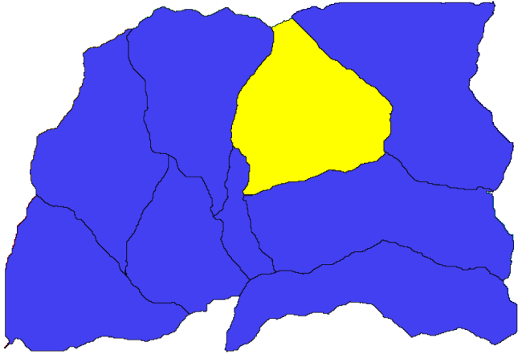 Clipping algorithm ကို အောက်ပါ prameter များအတိုင်းဖြည့်သွင်း၍ run ပါ။
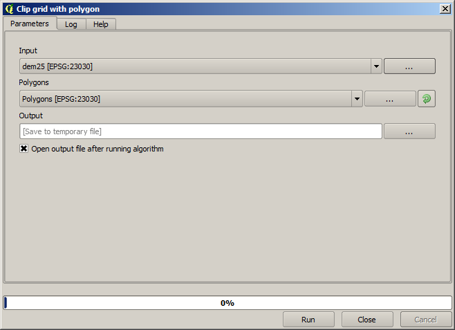 Input field ထဲတွင်ရွေးချယ်ထားသောအရာသည် clip ပြုလုပ်လိုသော DEM ဖြစ်ပါသည်။
အောက်ပါပုံစံအတိုင်းရရှိပါလိမ့်မည်။
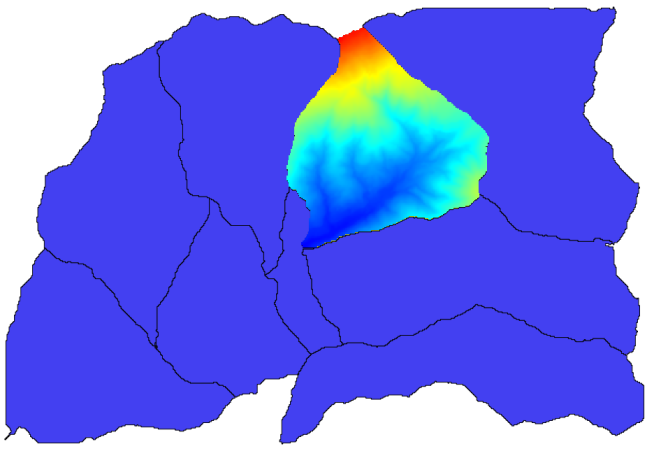
ထိုရလာဒ် layer ကို Raster layer statistics algorithm ထဲတွင် ထည့်သွင်းအသုံးပြုနိုင်ပြီဖြစ်ပါသည်။
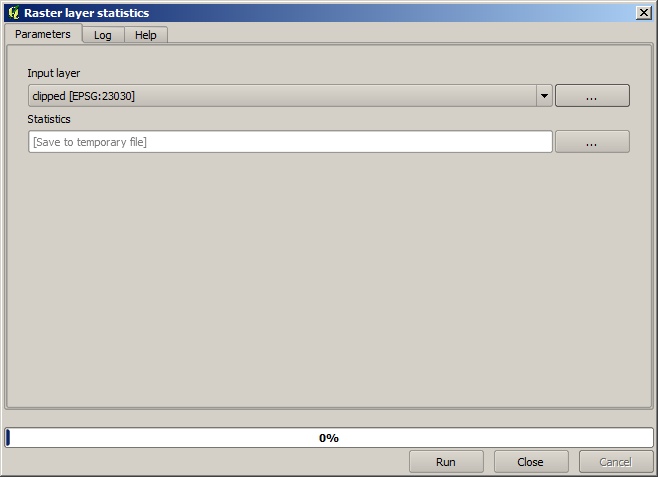 ရလာဒ် စာရင်းအင်းအချက်အလက်များသည် အောက်ပါအတိုင်းဖြစ်ပါသည်။
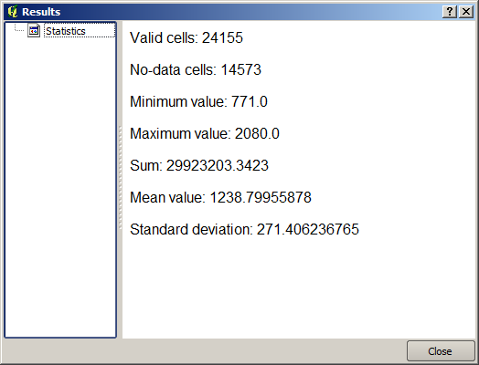
Basin တွက်ချက်ခြင်းလုပ်ငန်းစဉ်နှင့် စာရင်းအင်းအချက်အလက်များတွက်ချက်ခြင်း နှစ်မျိုးစလုံးကို အလိုအလျောက်လုပ်ဆောင်ပေးပြီး အလုပ်ပိုမိုထိရောက်စေနိုင်မည့် အခြားလုပ်ဆောင်ချက်များကို နောက်လာမည့်အခြားသင်ခန်းစာများတွင် လေ့လာရမည်ဖြစ်ပါသည်။